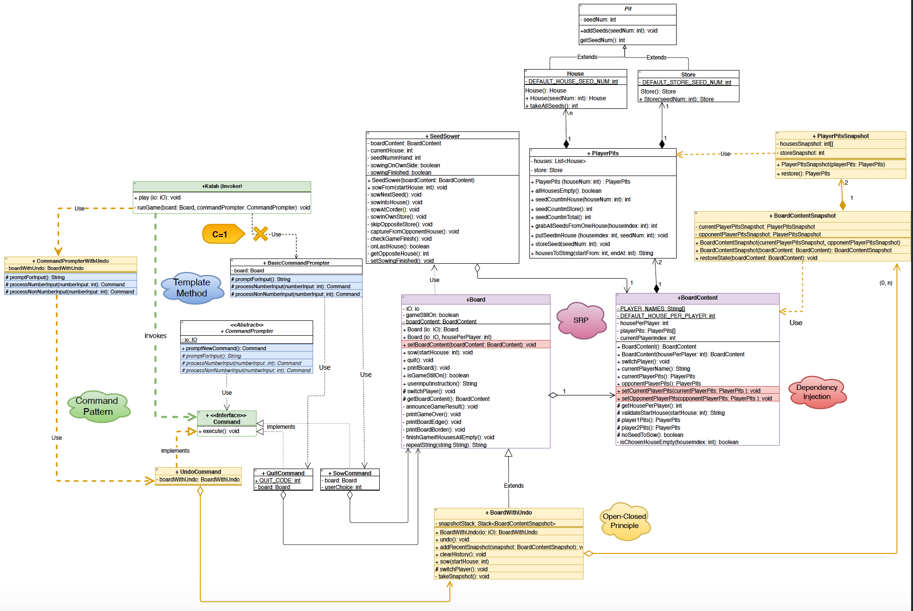

Assignment4 Reflection:
Kalah with improved Alterability and Testability
I am so happy that I get to “reasonably” use the design patterns and design principles I’ve always wanted to use in this assignment!
Extracting BoardContent from Board
I have always wanted to extract the model (which manages the two players’ pits) from the Board class, but found it hard to make the decision as there are so many small methods involved. Glad to finally achieve this.
The biggest challenge was with switchPlayer method:
- It has to be able to be overrode later when implementing “undo”, because I have to ensure that the move history for one user is correctly erased whenever he finishes his turn.
Boardshould now know nothing about the twoPlayerPits, otherwise it will break the encapsulation, and it does not make too much sense extractingBoardContentifBoardwants to take care ofPlayerPitsitself.
This is what I wound up having at this stage:
1 | class Board { |
1 | class BoardContent { |
In this way, I can override Board#switchPlayer() as needed, without breaking the encapsulation of PlayerPits within BoardContent:
1 | class BoardWithUndo extends Board { |
BoardContent is the “model” responsible for the state of each player’s pits. It maps well with the “board content” concept in the context schema, containing the pits of two players. My BoardContent will not need to be changed in the unlikely case where the game’s context schema is changed. Now, my Board only needs to be changed when we are changing how the player can operate on the board.
Separating the more stable model from the more dynamic operation interface makes the design more alterable because I can focus on changing or extending Board when implementing new game rules.
Why not Decorator pattern
I thought of using Decorator Pattern, so that I could add new functionalities to Board by wrapping it in BoardDecorators. This was appealing because I would get rid of the chain of inheritance BoardWithSkipAndUndo → BoardWithUndo → Board.
However, I decided not to use the decorator pattern because it does not give me much flexibility in changing existing behaviours of the object being decorated. I have to directly override switchPlayer() to update the move history whenever there is a switch in turn, so I chose to directly extend Board instead of decorating it.
Template Method
It is my first time using a template method for real!CommandPrompter.promptNewCommand() is a template method that defines how to prompt for user input and instantiate a concrete Command.
1 | public Command promptNewCommand() { |
This pattern makes it easy to add new possible user inputs.Whenever a new operation is added, for example, “u” for undo, I just need to create a new subclass of CommandPrompter and implement three hook methods:
promptForInput(), to tell users what input options are available;processNumberInput(int number)to process user’s number inputs and encapsulate the game operation into a concrete Command object.processNonNumberInput(String input), to process user’s non-number inputs and encapsulate the game operation into a concrete Command object.
For example, in CommandPrompterWithUndo:
1 |
|
UML, overall
Applying Observability and Controllabiity on my Kalah Design
It was nice to be able to have the observability and controllabiity insights for testability.
Observability
In addition to printing the board to observe the state of pits, I also added counters of method calls to allow examining of what happened within the programme. For example, MockPlayerPits overrides the method putSeedInHouse() to increment the putSeedInHouseCounter with each call. Test cases can then examine the putSeedInHouseCounter to ensure the process of sowing went as expected.
Observing instruction
To check what round the player is at, I could examine what instruction the game gave:
1 | @Test |
Observing player’s seeds
I could examine the player’s seeds by letting this specific player print their pits:
1 |
|
More insights by counting method invocation
By adding method invocation counters in the mocks, I could gain more insights into what happened:
1 | public class MockBoardContentSnapshot extends BoardContentSnapshot { |
Controllability
I created a constructor for MockPlayerPits that takes an int array for the number of seeds in each house.
By these the customisable mock, I am able to easily control the state of the game, while not breaking the encapsulation of the original PlayerPits.
1 | public MockPlayerPits(int[] houseSeedNum, int storeSeedNum) { |